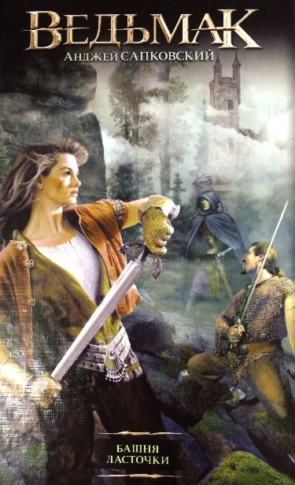
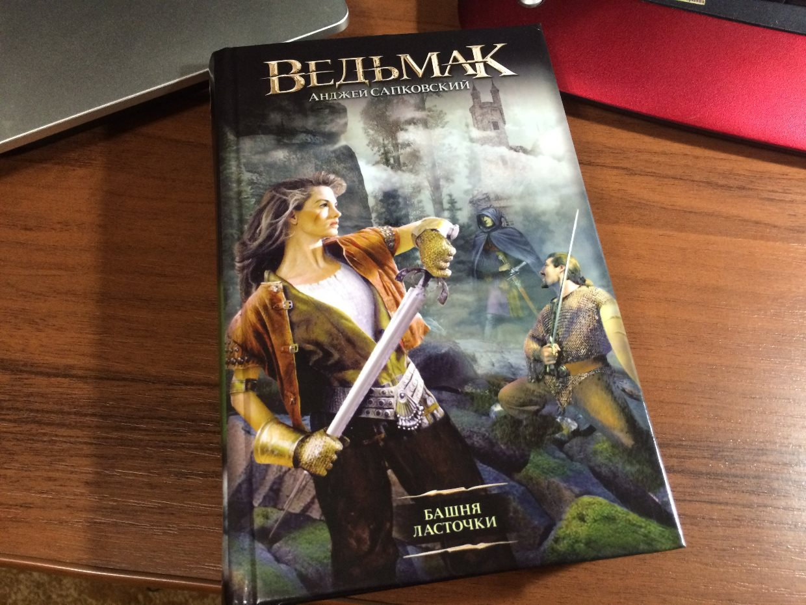

Мастер своего дела, Геральт ведьмак, могущественная чародейка Йеннифер и Дитя Предназначения Цири продолжают свой путь — сквозь кровопролитные сражения и колдовские поединки, предательские засады и вражеские чары. Весь мир — против них, но их ведет и направляет таинственная судьба. Каким-либо способом, но Дитя Предназначения должно оказаться в Башне Ласточки.
Можно ли "опускать руки", когда кажется, что все потеряно, или нужно бороться до последнего? Захватывающий сюжет не позволит Вам оставить книгу недочитанной. Сможет ли Геральт, который поверил в смерть Цири, но продолжает искать ее похитителей, поверить в силу предназначения. А приключения Цири читаются на одном дыхании.
Предисловие
Вот я и приобрёл ту самую первую книгу купленную мной историю великого и неповторимого Анджея Сапковского «Ведьмак» башня ласточки. Почему именно башня ласточки? Да потому что была только она. С неё и начнём свое путешествие. Итак не будем терять времени и приступим к чтению..
Фото-материальчик
Анджей Сапковский - Башня ласточки
